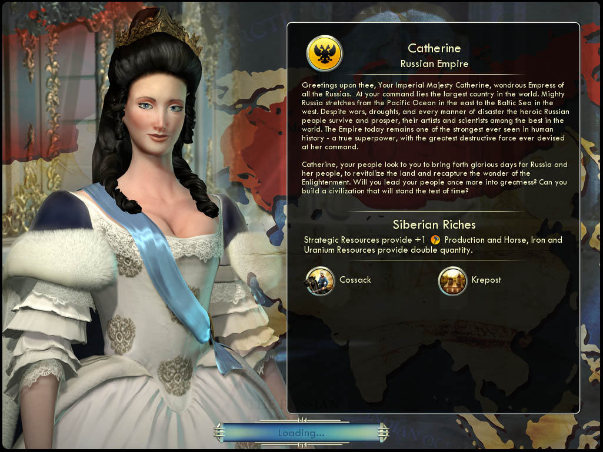

예카테리나 Catherine러시아 Russia |
|  |
| 러시아 제국의 위대한 여제 예카테리나시여, 안녕하십니까. 그대는 세계에서 가장 큰 나라를 움직이십니다. 강대한 러시아는 동쪽으로는 태평양으로부터 서쪽으로는 발트해까지 펼쳐져 있습니다. 전쟁과 가뭄, 모든 종류의 재앙에도 불구하고, 용감한 러시아인들은 살아남아 번영하였으며 세계 최고의 예술가와 과학자들을 배출했습니다. 오늘날까지 제국은 파괴적인 힘을 가진 엄청난 군사력으로 인류 역사상 가장 강대한 제국 중 하나로 남아있습니다.
예카테리나시여, 백성들은 그대가 다시 한 번 러시아와 러시아 백성들에게 영광스러운 시대를 가져다주고, 계몽사상을 널리 퍼트려 이 땅에 활력을 불어넣어 주시길 바랍니다. 그대의 백성들을 또다시 위대한 시대로 이끄시고 시간의 한계를 뛰어넘는 문명을 건설해 주시겠습니까? |
| 속성 | |
|---|---|
| 특성 |
시베리아의 풍요
(Siberian Riches) 전략 자원이 있는 타일에서 1의 생산을 추가로 얻고, 말/철/우라늄의 획득량이 2배가 됩니다. |
| 고유유닛 |
코사크
(Cossack) 기병대 대체 유닛입니다. 부상을 입은 유닛과 전투시 전투력 보너스를 33% 얻는 승급을 가집니다. |
| 고유건물 |
크리아포스츠
(Krepost) 병영 대체 건물입니다. 도시에서 생산하는 모든 유닛의 경험치를 15 증가시킵니다. 건설된 도시에서 새로운 타일을 획득하기 위한 문화와 타일 구매의 비용이 25% 감소합니다. |
| 시작지점 | 툰드라 |